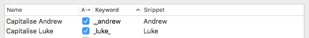

Snippets and Text Expansion Troubleshooting
Alfred's Snippets and Text Expansion feature is an incredibly useful way to save time by keeping your most used text clips as snippets you can paste with a few characters.
- My snippets are not expanding: If you've followed the steps to activate text expansion but are still not seeing any expansion taking place.
- My snippets are expanding incorrectly, partially or the keyword isn't disappearing fully.
- I'm seeing a red "preventing text expansion by locking secure entry" error message in the preferences
My snippets aren't expanding at all
1. Activate expansion in Alfred's preferences
First, ensure you're using the latest version of Alfred. Check by going to the "Update" tab, where you'll be notified if there's a newer version available.
Launch Alfred's preferences to Features > Snippets and check the box in the top right to "Automatically expand snippets by keyword".
The "Welcome to Alfred's Text Expansion" pop-up should appear; Follow the steps as described in the Text Expansion activation page.
Take a look at the steps below if the "Alfred Text Service" pop-up doesn't appear.
2. Check Accessibility for Alfred
In order for Alfred to be able to recognise the keywords for your text snippets, you need to ensure that Alfred 4 is granted Accessibility access in your Mac's Security & Privacy preferences, under Accessibility.
Alfred needs to be listed here and the box next to it must be checked. If it is already checked, please quit Alfred 4, remove and re-add Alfred 4 to the Accessibility preferences, then relaunch Alfred. This will ensure that if macOS (particularly macOS Catalina) has corrupted any permissions, this will refresh them.
3. Set Snippets to Expand
In your Snippets preferences, ensure the checkbox next to the specific snippet you want to expand is checked.
In the example below, only the top two snippets are set to auto-expand when their keyword is used. The others will not auto-expand when the keyword is typed.
4. Use the correct keyword
Are you using the correct keyword?
Check that there are no unexpected spaces in your keyword. In the example below, there are two spaces before the keyword "andrew" and a space before and after "luke", so the snippet will only expand when typed with these spaces around them.

5. Secure Input may be locked
Alfred will show a warning in the Snippets preferences letting you know that an app "seems to be preventing text expansion by locking secure entry".
If you're unable to expand your snippet, check these preferences and quit or re-launch the appropriate app.
The error message usually makes it easy to identify which application has locked secure input. If Alfred reports that "loginwindow seems to be preventing text expansion by locking secure input", it's likely that Alfred is unable to tell which application is using secure input.
This can be because macOS itself has left the secure input enabled (e.g. when you've recently logged into your Mac, or after waking your computer and typing your password). This can be resolved by restarting your Mac, or logging out fully and logging back in.
If the issue occurs frequently, try launching a minimum number of apps/services on your Mac, and re-launching apps one by one, allowing you to establish which app or service is locking secure input by process of elimination. Note that browser plugins (e.g. password managers) can be the cause, so enable plugins one at a time to test them.
6. Interference from other applications
If you've carefully followed the steps above and are still unable to expand your snippets, another app may be interfering.
Take a look at any other apps listed in your Mac's preferences under Security & Privacy > Privacy > Accessibility, and remove any non-essential apps.
You can check whether other apps are interfering by creating a new profile on your Mac temporarily. You can then activate and test out snippets on a fresh account to see if the snippets behaviour is as expected.
Be sure to try snippet expansion in a simple application like Apple's TextEdit to ensure that the issue isn't caused by the destination app.
7. Check Cmd + V is still reserved for pasting the clipboard contents
Alfred's Snippets feature relies on the Cmd + V hotkey combination being used for pasting the clipboard contents. If you've changed this hotkey combination to be used for another purpose, snippets won't be pasted.
My snippets are expanding partially, or the keyword remains
1. Slow down key events
If, when expanding your keyword, you find that part of the keyword is still visible, the wrong text is pasted or part of the snippet text is deleted, try slowing down the key events.
You'll find this setting in Alfred's Snippets preferences > Auto Expansion Options > Tweaking. Move the slider to the left to slow down Alfred's actions. We recommend starting with the slowest setting, then bringing it back towards the right until you're seeing predictable behaviour.
2. Check for interfering applications
If you're using another clipboard, snippet or keyboard manager app, it may be interfering with Alfred's ability to paste correctly (e.g. if two apps use the same snippet keyword and try to expand at the same time).
Launch Apple's Security & Privacy System Preferences to Privacy > Accessibility, and uncheck all other apps in Accessibility temporarily, and try using your snippets again. Turning them back on one by one will allow you to identify the interfering app.